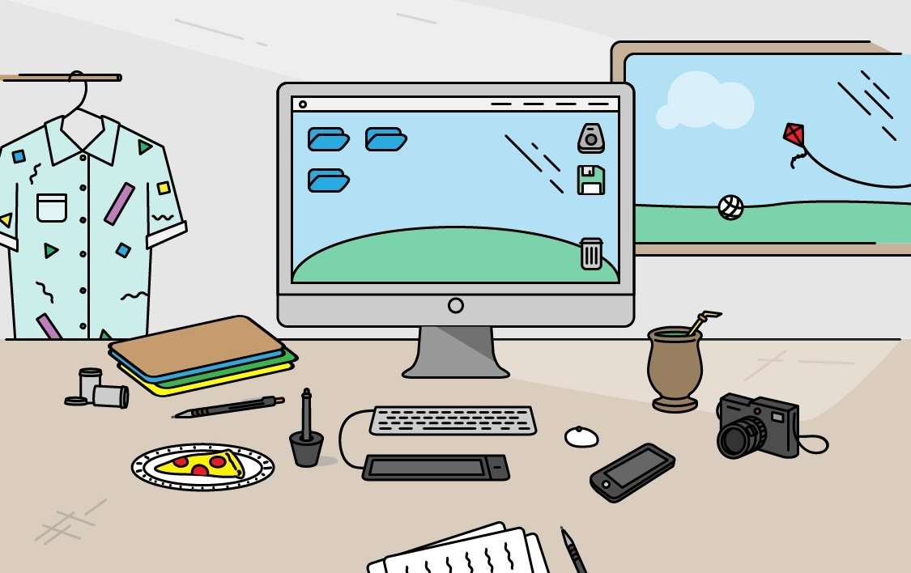

About
Hi there! 👋
You've found my little corner of the internet. Welcome.
I'm Craig Johnson: a Kiwi-made, Zurich-based design leader and cat-dad with 16+ years of experience across design, UX, and leadership.
Over the years, I've worked across startups, growth companies, and scaled organisations, helping teams understand customer problems, shape better products, and build stronger design practices across e-commerce, FinTech, SaaS, B2C, and B2B enterprise products.
I'm also passionate about video games, campervanning, music, animals, reading, and woodworking.
Since 2019, I've been working as a Senior UX Manager at GetYourGuide, partnering with product, engineering, and leadership teams across multiple product areas.
This website is mostly personal projects. A commercial portfolio is available on request.
Contact me on Linkedin
